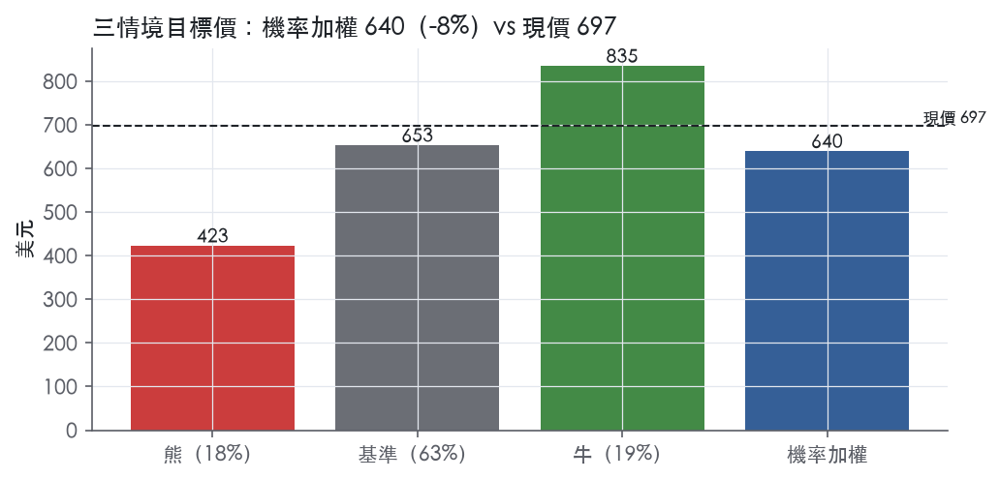
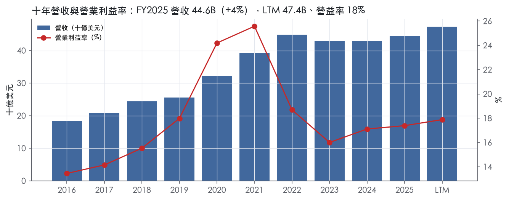
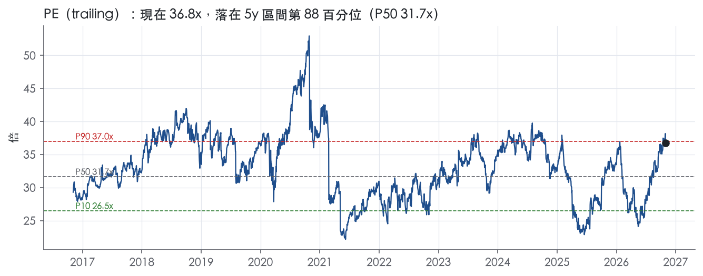
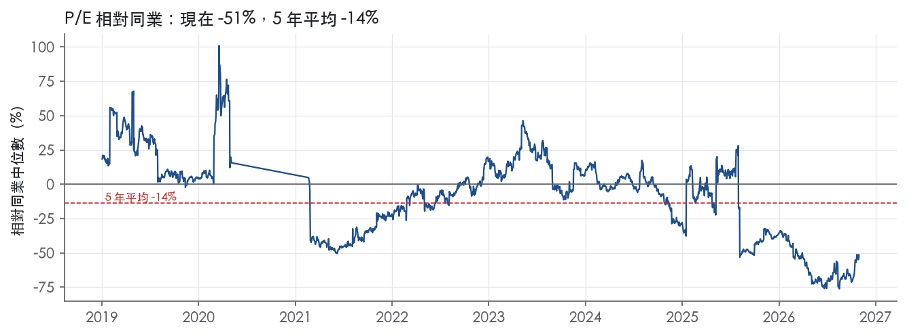
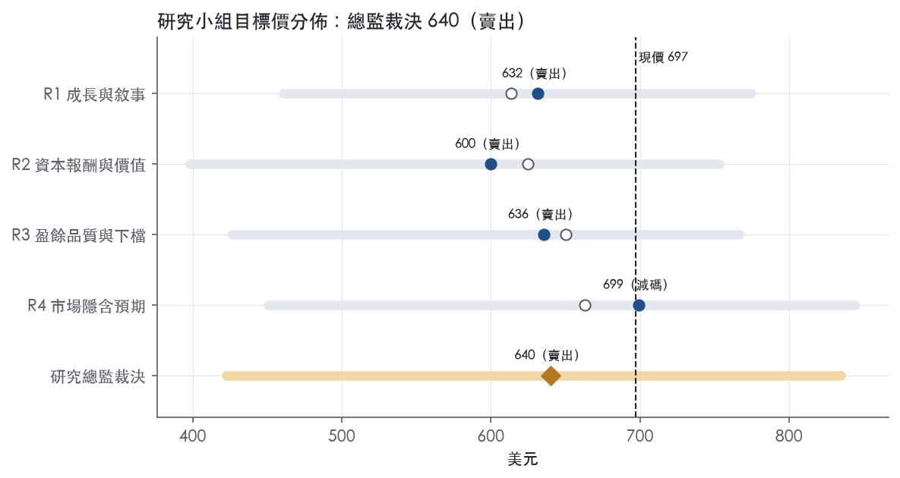
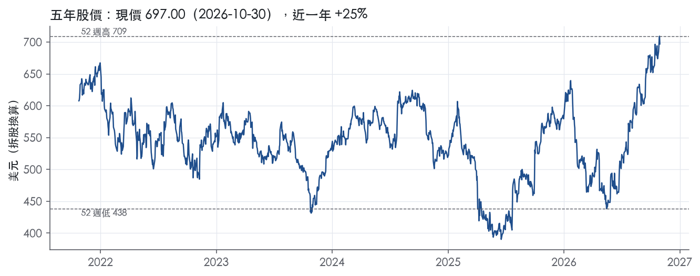

評等總表 › 醫療保健 › TMO
成長已入價，倍數回落，維持看空｜評等 賣出｜目標價 640
| 報告日 | 評等 | 目標價 | 當時股價 | 超額報酬 |
|---|---|---|---|---|
| 2026-10-30 | 賣出 | 640 | 697 | -17.8% |
| 2026-10-09 | 賣出 | 616 | 658 | -15.6% |
| 快評 | 動作 | 結論 |
|---|---|---|
| 2026-10-21 | 維持 | 利潤率高於我們預測，論點未破，維持賣出 |
| 評等 | 賣出（邊界，鄰近減碼） |
| 12 個月目標價 | 640 美元 |
| 現價 | 697.00 美元（2026-10-30） |
| 預期報酬 | 股價 -8.2%＋股息 0.3%＝總報酬 -7.9%；同業籃門檻 9.9%，超額 -17.8% |
| 估值方法 | P/E 32.0x，套在第 5–8 季的EPS（也就是一年後的未來四季） |
| 三情境 | 熊 423／基準 653／牛 835 |
| 研究流程 | 四位研究員兩輪辯論＋研究總監裁決 |
| 資料來源 | SEC EDGAR XBRL、Tiingo、FRED（全免費） |
成長已入價，倍數回落，維持看空（研究總監裁決，四位研究員兩輪辯論後）
評等 賣出（邊界，鄰近減碼）｜12 個月目標價 640 美元（總監三情境機率加權 646 與研究員中位數 634 各半）｜現價 697.00（2026-10-30）
預期報酬：股價 -8.2%＋股息 0.3%＝總報酬 -7.9%。同業籃門檻 9.9%，超額 -17.8%，離減碼的分界不到三個百分點，屬邊界評等（落在其他級距的機率約二成）。
估值方法：P/E 32.0x，套在第 5–8 季的EPS（也就是一年後的未來四季）。三情境：熊 423（18%）／基準 653（63%）／牛 835（19%）。
什麼會讓研究總監改變看法：FY2027 指引有機成長中值 ≥7% 且 FY2026 年報淨負債／EBITDA 回到 2.7x 以下，倍數上調到 35–36x、立場轉中性；指引有機 <4% 或 FY2026Q4 稅率仍高於 Q3，熊機率上調、倍數降到 P50 29.9x。
| 過去四季（實際，FY2026Q3） | 未來四季 | 第 5–8 季 | 第 9–12 季 | |
|---|---|---|---|---|
| 營收（B） | 47.4B | 50.2B | 53.2B | 56.4B |
| 營收成長 | 8.3% | 6.0% | 6.0% | 6.0% |
| 營業利益率 | 17.9% | 18.4% | 18.8% | 19.1% |
| EPS（美元） | 18.95 | 18.22 | 20.42 | 22.69 |
| EPS 成長 | 9.5% | -3.8% | 12.0% | 11.1% |
| 每股股息（美元） | 1.84 | 1.84 | 1.84 | 1.84 |
| P/E（現價） | 36.8x | 38.3x | 34.1x | 30.7x |
| 股息殖利率（現價） | 0.3% | 0.3% | 0.3% | 0.3% |
過去四季為申報數字；預測為研究總監的假設、程式計算。倍數與殖利率都用現價計算，用來看現價對應各期獲利的高低。
| 項目 | 上次（2026-10-12） | 這次（2026-11-02） | 變動 |
|---|---|---|---|
| 評等 | 賣出 | 賣出 | ＝ |
| 機率加權目標價（美元） | 616 | 640 | +3.9% |
| 超額報酬 | -15.6% | -17.8% | -2.2 pp |
| 目標倍數 | 32x | 32x | — |
| 未來四季營收成長 | 7.0% | 6.0% | -1.0 pp |
| 未來四季營益率 | 17.8% | 18.4% | +0.6 pp |
| 未來四季 EPS（美元） | 18.25 | 18.22 | -0.1% |
| 熊／基準／牛機率 | 19／63／18 | 18／63／19 | — |
程式計算；「未來四季」各自從當次報告的資料起點算。研究總監逐點說明見第八章「與上次報告比較」。
| 情境 | 機率（歷史） | 故事 | 未來四季營收成長 | 第 5–8 季營益率 | 倍數 | 目標價 | 股價漲跌 |
|---|---|---|---|---|---|---|---|
| 熊 | 18%（15%） | 對應風險表第 1 條（學術政府資金與預算僵局）、第 2 條（中國在地採購、關稅、美元走強）加第 3 條（槓桿紅燈迫使回購縮手）；本行下行路徑 GDP 0.3、失業率 5.1，FY2027 指引有機 <4%，相對同業溢價回到 5 年平均，倍數落在前瞻帶 P25–P50 | 2.5% | 17.0% | 26.0x | 423 | -39.4% |
| 基準 | 63%（66%） | 有機停在 6%、分拆與 Solventum 基期壓低報告制，PPI 推 GAAP 營益率緩升、稅率回升到 13%，倍數從帶 P90 以上回到 P50–P75 之間 | 6.0% | 18.8% | 32.0x | 653 | -6.3% |
| 牛 | 19%（19%） | 藥物生技資本支出全面回補、FY2027 指引有機 ≥7%，市場維持現行前瞻倍數；取本行上行路徑（10 年債 4.60、美元 119.0） | 7.0% | 20.0% | 37.0x | 835 | 19.8% |
目標價由程式依研究總監的驅動與倍數計算；機率由研究總監給定。括號內是歷史頻率：把這檔股票過去十年 12 個月報酬的波動形狀，置中在基準情境，結果落在各情境附近的比例。

四位研究員用不同方法各自估值，回應研究總監的質疑後交出第二輪，最後由總監逐點裁決。各研究員的主張見第七章，裁決理由見第八章，完整論證見《研究底稿》。
| 立場（一輪→二輪） | 加權目標價（一輪→二輪） | 評等（一輪→二輪） | 第二輪倍數 | 熊～牛目標價 | |
|---|---|---|---|---|---|
| R1 成長與敘事 | 中性→看空 | 614→632 | 賣出→賣出 | 31.0x | 461～775 |
| R2 資本報酬與價值 | 看空→看空 | 625→600 | 賣出→賣出 | 31.0x | 398～753 |
| R3 盈餘品質與下檔 | 中性→看空 | 650→636 | 賣出→賣出 | 32.0x | 426～766 |
| R4 市場隱含預期 | 看空→看空 | 663→699 | 減碼→減碼 | 34.0x | 451～844 |
| 研究總監裁決 | 看空 | 640 | 賣出 | 32.0x | 423～835 |
目標價由程式依各自的驅動與倍數計算；評等＝機率加權總報酬 − 同業籃門檻。
Thermo Fisher Scientific 是全球最大的科學服務供應商，靠併購與內生成長堆出來的生命科學工具＋分析儀器＋診斷＋藥物服務一體化平台。公司的使命是協助客戶讓世界更健康、更乾淨、更安全，服務領域涵蓋生命科學研究加速、複雜分析挑戰、實驗室生產力提升，以及透過診斷和療法開發製造改善病患健康¹。主要客戶市場分為製藥與生技、學術與政府、工業與應用、醫療保健與診斷四大類¹。FY2025 總營收 44.56B 美元，LTM（至 FY2026Q3）營收已達 47.35B 美元。公司品牌陣容包括 Thermo Scientific、Applied Biosystems、Invitrogen、Gibco、Fisher Scientific、Unity Lab Services、Patheon 和 PPD²，覆蓋從實驗耗材到委託藥物開發與生產（CDMO）的完整價值鏈。
公司營運分為四大分部：Life Sciences Solutions、Analytical Instruments、Specialty Diagnostics、Laboratory Products and Biopharma Services¹。FY2025 各分部營收：Life Sciences Solutions 10,374M 美元（FY2024 為 9,631M 美元），年增 8%，有機成長 3%¹；Analytical Instruments 7,554M 美元（FY2024 為 7,463M 美元），有機成長持平（0%）¹；Specialty Diagnostics 4,676M 美元（FY2024 為 4,512M 美元），年增 4%，有機成長 1%¹；Laboratory Products and Biopharma Services 是最大分部，23,984M 美元（FY2024 為 23,157M 美元），年增 4%，有機成長 1%¹；四分部加總後扣除分部間消除項（2,033M 美元）得出合併營收 44,556M 美元¹。獲利能力上，Life Sciences Solutions 分部利潤率最高，FY2025 為 36.3%（FY2024 為 36.4%，略降 0.1 個百分點）¹；Specialty Diagnostics 利潤率 26.9%，較 FY2024 的 25.7% 提升 1.2 個百分點¹；Analytical Instruments 利潤率下滑最明顯，從 26.2% 降至 23.0%，主因關稅與外匯衝擊、策略性投資及不利產品組合¹；Laboratory Products and Biopharma Services 利潤率雖最低（14.0%，FY2024 為 13.3%），但靠生產力改善逐步墊高¹。分部內部驅動因子方面，Life Sciences Solutions 的成長主要來自生物製程（bioproduction）業務，FY2025 報告制成長 548M 美元，加上基因科學因 2024 年併購 Olink 貢獻 82M 美元成長¹；Laboratory Products and Biopharma Services 則由藥物服務業務與研究安全通路帶動，分別成長 457M 美元與 422M 美元¹。四個分部中以 Laboratory Products and Biopharma Services 與 Life Sciences Solutions 是 FY2025 有機營收成長的主要貢獻者¹。整體來看，公司是以藥物與生技客戶為核心收入來源、儀器與診斷分部提供技術差異化、服務分部提供黏性與現金流穩定性的組合。
客戶集中在製藥與生技領域，FY2025 該市場需求成長但部分被 COVID-19 疫苗與療法相關產品需求下滑抵銷¹；學術與政府市場營收下滑，原因是美國政策不確定性導致客戶觀望，以及中國總體環境影響¹；工業與應用市場成長，醫療保健與診斷市場則持平¹。地區方面，FY2025 北美、歐洲、亞太銷售均成長，但中國銷售下滑¹。10-K 未揭露各地區占營收的具體百分比。匯率方面，FY2025 美元走弱帶來 0.37B 美元的正面匯兌影響¹。客戶也包含政府機構，公司因此須遵守政府合約相關的採購與定價法規¹。通路上，公司高度依賴第三方包裹快遞服務（如美國的 Federal Express、歐洲的 DHL）出貨，同時維持小型自有車隊¹；2026 年第三季另於肯塔基州啟用高度自動化配送中心，強化北美供應韌性與速度²。公司也透過通路業務（channel businesses）直接服務實驗室終端客戶，涵蓋研究安全（research and safety）市場通路¹。整體客戶結構偏向大型製藥/生技與政府資助研究機構，使公司營收對產業資本支出週期與政府預算（如聯邦政府停擺）敏感。
過去四季營收與獲利率逐季改善，由藥物與生技需求回溫及生產力計畫驅動。FY2025Q4 營收 12.21B 美元，年增 7.2%，營益率 18.5%（is/dv 資料包，推導）。FY2026Q1 營收 11.01B 美元，年增 6.2%，營益率回落至 16.9%，季節性為全年最淡季。FY2026Q2 營收成長 10% 至 11.99 億美元（原文誤繕，應為 11.99B 美元），有機成長 5%，GAAP 稀釋 EPS 成長 9% 至 4.68 美元，調整後 EPS 成長 13% 至 6.03 美元³；GAAP 營業利益率 17.4%（去年同期 16.9%），調整後營業利益率 22.8%（去年同期 21.9%）³；該季公司宣布分拆微生物業務，並回購 1.0B 美元股票³。FY2026Q3 營收成長 9% 至 12.14B 美元，含 6% 有機成長，GAAP 稀釋 EPS 成長 9% 至 4.64 美元，調整後 EPS 成長 15% 至 6.68 美元²；GAAP 營業利益率擴大至 18.6%（去年同期 17.4%），調整後營業利益率 24.5%（去年同期 23.3%）²；公司於該季完成先前宣布的微生物業務分拆²。公司在 2026Q3 財報稿中表示將於財報電話會議中提供更新後的 2026 年度財測，新聞稿本身未揭露具體下一季指引數字²。整體趨勢是：營收年增率從 Q1 的 6.2% 加速到 Q3 的 9.1%（is/dv 資料包），調整後營益率同步擴張，顯示生產力改善（PPI Business System）正在發酵。
公司持續執行其「三大支柱」成長策略：高影響力創新、與客戶的信任夥伴關係、無與倫比的商業引擎¹。公司強調透過 Practical Process Improvement（PPI）Business System 應對通膨、推動成本效率並改善獲利能力，內容包括優化定價實現、持續改善方法論降低成本、全球採購計畫、裁員與設施整併後的較低成本結構，以及低成本地區製造¹。FY2025 重組相關費用約 0.3B 美元，預期可實現約 0.5B 美元的年化成本節省¹。併購策略上，公司於 2024 年 7 月收購瑞典蛋白質體學公司 Olink，強化 Life Sciences Solutions 分部於高成長蛋白質體市場的能力¹；2025 年 9 月向 Solventum 收購過濾與分離業務，強化生物製程過濾技術並擴大半導體、電池、醫材產業應用¹。近兩季新聞稿顯示公司持續推出高影響力新產品，包括新一代 Orbitrap 質譜儀系列、EMPAD G2 電子偵測器、FDA 核准的 EliA CTD 13 自體免疫篩檢試劑，以及與 Mayo Clinic 合作推出蛋白質體學平台 Precure²；同時在南韓設立首座 AI-Automation Innovation Center，並持續推動資本配置策略（股票回購、業務分拆）²。公司的成長引擎本質上是「內生有機成長 + 高溢價併購 + 持續性成本紀律」三件事同時做，過去兩季有機成長加速到 5-6% 顯示藥物與生技客戶的資本支出已回溫，但學術與政府及中國市場仍是拖累項。考量目前 trailing P/E 36.8x、EV/EBITDA 25.4x 均處於五年相對高檔（分位數 88%、96%），市場已price-in 這波利潤率擴張的延續性，後續若有機成長無法維持在中個位數以上，估值下修風險值得留意。

TMO 在營運層有真實的轉換成本與品牌，但我們沒有把握未來 5 年 ROIC 能穩定高於資本成本代理值 10.0%，依本部標準評為「無」護城河。這不代表生意沒有壁壘；問題在於歷年高溢價併購把超額報酬轉成了商譽，股東資本層的報酬只與資本成本打平。趨勢判為穩定：FY2023 至 FY2025 的 ROIC 依序為 9.1%、8.9%、9.1%，看不到變寬或變窄的證據。
三類有證據：轉換成本最強，無形資產次之，成本優勢偏弱；網路效應與效率規模找不到證據，不列。本章收到的 10-K 原文實際上是 Item 1A 風險因子段，不含 Item 1 的競爭段落，以下證據全部取自風險因子的表述，估值研究員應知道這個限制。
轉換成本：公司表示客戶用它的許多產品與服務來開發、測試並製造客戶自己的產品⁴。公司是許多客戶多種藥品的唯一製造商⁴。這些產品的製造受 FDA、DEA、EMA 的持續監管與檢查，並須遵守現行良好製造規範（cGMP）⁴。供應商一旦寫進客戶的法規申報與製程驗證，替換就得重新驗證，這是 CDMO 與生物製程業務最硬的黏著來源。公司談自己的採購時也承認，唯一或有限來源的供應商出問題時，可能無法迅速建立或認證替代來源⁴。客戶面對 TMO 時處境相同。
無形資產：公司擁有眾多美國與外國專利，並依賴商標與自有品牌的強度⁴。截至 2025 年 12 月 31 日，非確定年限無形資產（主要為商標名）約 1.23B 美元⁴。FDA、DEA 等許可與登記本身也構成進入門檻。不過公司自己也說，已核發專利可能被挑戰、宣告無效或被迴避，且未必帶來競爭優勢⁴。因此專利這一項我們只給低權重。
成本優勢（弱）：公司把產品線廣度列為競爭因素之一⁴，並持續建置商業工具與基礎設施，利用產品深度做交叉銷售⁴。同一段原文也寫到，競爭對手可能取得公司無法匹配的成本或品質優勢⁴。所以規模只算輔助，不構成獨立護城河。
看不到：量化底稿與質化優勢明顯衝突，這是我們把評級下修到「無」的主因。ROIC 十年平均 10.1%、最新 9.1%，平均減資本成本只有 0.2%。有資料的 9 年中只有 3 年高於資本成本，而且這 3 年都在疫情期間：FY2020 為 15.1%、FY2021 為 15.0%、FY2022 為 10.8%，一次性需求成分很重。扣掉疫情年，ROIC 從未越過資本成本，十年最低是 6.4%。
支持質化主張的是穩定性：FCF 利潤率標準差只有 1.8%，營業利益率十年平均 18.0%、最低 13.5%，顯示客戶黏性與定價能力確實存在。衝突出在分母：截至 2025 年 12 月 31 日，帳上商譽約 49.36B 美元，確定年限無形資產 14.60B 美元⁴。公司也承認併購可能以大幅高於可辨認淨資產公允價值的溢價成交⁴。營運資產本身的報酬或許高於資本成本，但評級看的是股東實際投入、含併購溢價的資本。
還有兩個數字讓我們不願以「營運層優勢」把評級拉回窄。第一，FCF 利潤率最新 14.1%，正好是十年最低。第二，營業利益率標準差 3.8%不算小。
最大的侵蝕來源不是對手，而是持續靠溢價併購買成長，讓 ROIC 長期壓在資本成本附近。公司明言併購是既定策略，若整合不成或無法實現綜效，可能須提列重大減損⁴。
其他侵蝕來源如下：
目標倍數相對同業應持平，不給護城河溢價。FCF 的穩定度支持不折價，但 ROIC 只與資本成本打平，任何溢價都只能來自有機成長與利潤率擴張，不能歸功於護城河。目前 P/E 36.8x、EV/EBITDA 25.4x 分別位於五年 88.3%、96.3% 分位（對照帶），建議以五年中位數 P/E 31.7x、EV/EBITDA 21.5x為定錨，而不是沿用現行水準。
| 指標 | 最新 | 十年平均 | 標準差 | 最低 | 最高 |
|---|---|---|---|---|---|
| ROIC | 9.1% | 10.1% | 2.9% | 6.4% | 15.1% |
| 營業利益率 | 17.4% | 18.0% | 3.8% | 13.5% | 25.6% |
| FCF 利潤率 | 14.1% | 16.5% | 1.8% | 14.1% | 21.2% |
| ROE | 13.0% | 14.4% | 3.6% | 9.5% | 20.5% |
程式計算。資本成本代理值（10 年債＋5%）：10.0%；ROIC 平均減資本成本：0.2%；ROIC 有資料的 9 年中，高於資本成本 3 年。
LTM 營業現金流／淨利 1.32x、自由現金流／淨利 1.07x，均優於綠燈門檻，顯示盈餘有現金支撐，不是靠應計堆出來的。但淨負債／EBITDA LTM 3.05x 觸及紅燈，且利息保障倍數從十年平均 8.28x 降到 LTM 5.51x，槓桿這條是真問題，不是口徑假警報。整體盈餘「品質」本身（現金含量）沒問題，但資本結構已經在收斂估值可以給的倍數空間。
跟上，而且是長期穩定的跟上，不是單季現象。CFO／淨利 LTM 1.32x、近三年平均 1.31x、十年平均 1.41x，三個時間窗都在 1.0x 以上，綠燈。FCF／淨利 LTM 1.07x、近三年 1.08x、十年 1.15x，同樣全綠，代表資本支出沒有把現金吃光。應計比率 LTM -2.0%、近三年 -2.0%、十年 -2.4%，全部是負值且遠低於 5% 紅線，這是典型的「盈餘比現金還保守」訊號，不是靠應收帳款或存貨堆砌出來的獲利。唯一的雜訊是營運資金面：FY2025 應收帳款成長超過營收成長 4.7pp、存貨成長超過營收成長 5.1pp，後者踩到黃燈，但兩者都還在 15pp 紅線之下，屬於觀察而非警報。
公司在非 GAAP 調整裡最大的一塊是收購無形資產攤銷，單季 519M 美元，佔營收 4.3%，年增金額也從去年同期 435M 美元放大²。這塊我認為是真實的經濟成本，因為公司長年靠併購擴張組合（Patheon、PPD 等品牌都是買來的）¹，持續性併購意味著這筆攤銷會持續出現，把它全數加回非 GAAP 盈餘等於假裝公司不靠併購成長。第二塊是重組與其他成本，單季 199M 美元，佔營收 1.6%，較去年同期 135M 美元擴大²。重組名義上一次性，但公司幾乎每季都有這筆支出，近兩年沒有消失過，應視為「經常性的一次性項目」，打折加回。SG&A 調整項單季僅 -20M 美元（本季為負，去年同期是 +66M 美元）²，金額小、方向不穩定，影響有限。GAAP 稀釋 EPS 4.64 美元對 Adjusted EPS 6.68 美元，單季缺口達 2.04 美元，主因就是攤銷加重組這兩項²，顯示非 GAAP 盈餘比 GAAP 多出近四成，估值不能直接套用 Adjusted EPS 做乘數基礎。
槓桿是本季資產負債表的核心議題。淨負債／EBITDA LTM 3.05x，相對近三年平均 2.62x、十年平均 2.69x 都是上升，而且是唯一踩紅燈的項目。總債務從 FY2025Q4 的 39.38B 美元一路爬到 FY2026Q3 的 41.37B 美元（資料包八季表），淨負債在快照層也到 35.31B 美元，是舉債擴張、不是單純盈餘稀釋造成的槓桿上升。利息保障倍數 LTM 5.51x 雖未到紅燈（<3.00x），但黃燈且較十年平均 8.28x 明顯惡化，利息支出單季已到 417M 美元，去年同期僅 347M 美元（量化底稿對應 8-K 數字）²，升息環境下付息壓力在增加。股東回饋面，（股利＋回購）／淨利 LTM 66.6%，高於近三年 61.8% 與十年平均 48.7%，稀釋股數年變動 0.0%（近三年 -1.4%），顯示公司持續淨減股數、沒有稀釋股東，回饋力度也在加大，這跟負債上升同時發生，意味著部分資本配置（併購＋回購）是用舉債支撐的，不是純粹靠內生現金。資產負債表上另一個長期結構是商譽與無形資產規模巨大，商譽與無限年期無形資產合計約 49.36B 美元及 1.23B 美元，定期攤銷無形資產 14.60B 美元⁴，公司本身也承認若整合不順利可能觸發減損⁴，這是併購驅動成長模式下的隱性風險，雖非本期紅旗，但放大了槓桿上升的敏感度。
程式標出的唯一紅旗是「淨負債／EBITDA 紅燈（LTM 3.05x，近三年平均 2.62x）」。這是真問題，不是一次性也不是口徑假警報。證據：總債務從 FY2025Q4 39.38B 美元升到 FY2026Q3 41.37B 美元（資料包八季表），同期淨負債在年度表從 FY2024 的 25.70B 美元升到 FY2025 的 29.28B 美元，再到快照層 35.31B 美元，債務是持續性爬升的趨勢，不是單季財務操作造成的暫時性跳升。公司本身在風險因子裡承認持續併購策略是成長引擎的一部分⁴，也在新聞稿裡提到本季完成了微生物業務的分拆（屬於資本配置動作之一）²，顯示公司一直在用資產負債表做組合調整，槓桿上升是策略選擇的結果，而非一次性意外，所以不能用「排除法」打折，應該直接計入估值的槓桿風險。
此外計分表另有一個黃燈（利息保障倍數 5.51x）與一個黃燈（存貨成長超越營收成長 5.1pp），程式沒有把它們列為「紅旗」，但依規則仍需交代。利息保障倍數的惡化與上述槓桿紅燈同源，是舉債規模擴大加上利率環境走高共同造成，不是獨立問題，可視為槓桿紅旗的延伸訊號。存貨成長超過營收成長 5.1pp則更可能是口徑性的雜訊：第三季營收年增已達 9%、器材與試劑類業務在為下半年及明年出貨備貨是常態操作，且公司在 MD&A 中提到原物料與燃料成本波動以及供應鏈策略性操作會影響庫存水位⁴，這條我視為可解釋的假警報而非真問題。
估值應該以 GAAP 稀釋 EPS 為基礎，對 Adjusted EPS 中的攤銷與重組兩項做保守折扣，因為這兩項金額大且具持續性，直接全數加回會系統性高估盈餘品質。現金品質本身沒有問題，不需要對「現金轉換」這條額外打折，但槓桿已經是真實限制：淨負債／EBITDA 紅燈加上利息保障倍數轉黃，意味著 EV/EBITDA 類倍數的適用空間應比歷史中位數更保守，尤其目前 EV/EBITDA 25.4x 已站在近五年 96.3% 分位（資料包倍數帶），槓桿上升疊加倍數已處高位，估值應避免再用歷史高分位倍數去外推。
| 項目 | LTM | 近三年 | 十年 | 燈號 | 規則 |
|---|---|---|---|---|---|
| 營業現金流／淨利 | 1.32x | 1.31x | 1.41x | 綠 | ≥1.00x 綠、<0.80x 紅 |
| 自由現金流／淨利 | 1.07x | 1.08x | 1.15x | 綠 | ≥0.90x 綠、<0.60x 紅 |
| 應計比率（(淨利−CFO)／平均總資產） | -2.0% | -2.0% | -2.4% | 綠 | ≤0.0% 綠、>5.0% 紅 |
| SBC／營收 | 0.7% | 0.7% | 0.7% | 綠 | ≤3.0% 綠、>8.0% 紅 |
| 淨負債／EBITDA | 3.05x | 2.62x | 2.69x | 紅 | ≤1.50x 綠、>3.00x 紅 |
| 利息保障倍數（營業利益／利息） | 5.51x | 5.24x | 8.28x | 黃 | ≥8.00x 綠、<3.00x 紅 |
| 稀釋股數年變動 | 0.0% | -1.4% | -0.5% | 綠 | ≤0.0% 綠、>3.0% 紅 |
| （股利＋回購）／淨利 | 66.6% | 61.8% | 48.7% | 綠 | ≥50.0% 綠、<0.0% 紅 |
| 應收帳款成長 − 營收成長（FY2025） | +4.7pp | — | — | 綠 | ≤5pp 綠、>15pp 紅 |
| 存貨成長 − 營收成長（FY2025） | +5.1pp | — | — | 黃 | ≤5pp 綠、>15pp 紅 |
程式計算；燈號以 LTM（無則近三年平均）判定。
| 風險 | 觸發指標（看什麼數字、在哪裡看） | 對 EPS 的影響方向與粗略幅度 | 未來 12 個月發生機率（高／中／低） | 出處 |
|---|---|---|---|---|
| 政府／學術終端市場資金疲弱、聯邦預算僵局 | 季報 Academic and Government 市場營收年增率；聯邦政府撥款法案／繼續決議（CR）通過與否 | 負向，幅度中－大（該市場已連續下滑，且 2025 年 10 月已發生一次聯邦政府停擺） | 高（已發生、且預算僵局風險結構性存在） | ⁴¹ |
| 關稅、外匯與中國市場惡化 | 美元指數走勢、中國區營收年增率（季報分地區揭露）、美國/中國互徵關稅公告 | 負向，幅度中（2025 年匯率曾帶來 0.37B 美元正面效果，方向可逆） | 高（中國銷售已下滑，關稅政策持續變動） | ⁴¹ |
| 槓桿上升、利息費用擴大與 covenant 壓力 | 總負債（資料包 bs.總債務，已從 FY2024Q4 的 31.27B 升至 FY2026Q3 的 41.37B）；Consolidated Net Interest Coverage Ratio 是否貼近 3.5:1.0 下限 | 負向，幅度中（利息費用上升直接壓縮淨利，覆蓋率違約會觸發交叉違約條款） | 中（近兩年總債務持續擴張，但目前無違約跡象） | ⁴；總債務數字【資料包：bs.總債務.FY2024Q4~FY2026Q3】 |
| 商譽與無形資產減值 | 商譽 49.36B 美元、無限年期無形資產 1.23B 美元、確定年期無形資產 14.60B 美元（合計逾 65B，約占市值 258.25B 的四分之一）；任何被併購業務之營運虧損或獲利顯著下滑公告 | 負向，幅度大但為非現金項目，一次性認列可直接打擊 GAAP EPS | 中（併購導向的商業模式下，部分舊併購資產隨時可能需重新評估） | 10-K 年報 FY2025 Item 1A（風險因素） |
| 藥物服務（CDMO）／診斷品質或法規事件 | FDA/EMA 查核結果、warning letter 或產品回收公告；Laboratory Products and Biopharma Services 分部營益率（FY2025 為 14.0%，業務概況章） | 負向，幅度中－大（該分部是營收最大但利潤率最低的分部，品質事故恢復成本高且牽連客戶合約） | 低－中（尚無具體事件，但分部規模大、複雜度高） | ⁴ |
政府／學術終端市場資金疲弱、聯邦預算僵局是目前最可被驗證的風險，因為它已經部分發生：10-K 明確寫出「2025 年 10 月，聯邦政府因撥款法案未通過而進入停擺」，且公司提示「類似的預算僵局可能導致聯邦支出大幅延遲或削減」⁴。業務概況章也指出「學術與政府市場營收下滑，原因是美國政策不確定性導致客戶觀望，以及中國總體環境影響」。這條風險可監測性高——只要看季報中 Academic and Government 市場的年增率，以及國會是否按時通過撥款法案或繼續決議即可。由於該情況已在發生而非假設性事件，機率判定為高。
關稅、外匯與中國市場惡化同樣是已經觀察到趨勢的風險。10-K 列舉「美國對他國商品課徵關稅、以及他國對美國商品的報復性關稅」為國際營運風險之一⁴，而業務概況章也確認「中國銷售下滑」為FY2025的既成事實。匯率本身是雙面刃：2025 年美元走弱帶來 0.37B 美元的正面營收效果⁴，但這代表一旦美元轉強，同樣幅度的逆風可能發生。由於中國需求疲弱與關稅政策波動兩個因子同時存在，且公司超過一半營收來自海外業務（10-K 稱「國際市場貢獻公司營收的相當大部分」）⁴，這條風險的觸發機率判定為高。
槓桿上升、利息費用擴大與 covenant 壓力是資料包裡可以直接量化驗證的趨勢。公司總債務從 FY2024Q4 的 31.27B 美元，一路攀升到 FY2026Q3 的 41.37B 美元（資料包 bs.總債務），同期淨負債達 35.31B 美元。10-K 揭露循環信用額度（Facility）要求維持最低 Consolidated Net Interest Coverage Ratio 3.5:1.0，且「未能遵守任一限制或承諾可能構成違約事件，進而觸發債務加速到期，並可能連動觸發其他債務工具的交叉違約」⁴。目前沒有證據顯示公司已接近違約門檻，但債務規模持續擴張（本身是併購與股票回購資金來源）意味著利息費用對 EPS 的侵蝕會持續存在，機率判定為中。
商譽與無形資產減值規模驚人：商譽 49.36B 美元、無限年期無形資產（主要是商標）1.23B 美元，加上確定年期無形資產 14.60B 美元，三者合計逾 65B 美元，接近公司目前市值 258.25B 美元的四分之一⁴。10-K 直言「若無法實現商譽與無形資產的價值，可能須認列重大減值費用」，且觸發條件包括「被併購業務的營運虧損或獲利顯著下滑」⁴。這類風險不易預測發生時點，但一旦發生即為一次性大額非現金費用，直接打擊 GAAP EPS（雖然市場通常會在調整後 EPS 層面忽略），機率判定為中。
藥物服務（CDMO）／診斷品質或法規事件風險的特點是分部規模大但發生機率難以預估。10-K 專章說明「藥物服務業務高度複雜，品質管理系統一旦失效，可能導致設施停產、產品銷毀、客戶求償，甚至遭 FDA/EMA 採取產品回收、禁制令或民事/刑事制裁」⁴，並特別提到「公司是多個客戶唯一的藥品製造商，一次負面監管事件可能影響客戶自身對外供貨能力」⁴。業務概況章顯示 Laboratory Products and Biopharma Services 分部FY2025 營收 23,984M 美元是四個分部中最大者，但利潤率僅 14.0%，意味這個分部的槳葉面積大、容錯空間相對小。目前沒有已知具體事件，機率判定為低至中，但影響幅度偏大故仍排入前五。
現價 697.00 對應 trailing（過去四季）P/E 36.8x、EV/EBITDA 25.4x、EV/EBITA 28.4x、EV/Sales 6.2x、FCF 殖利率 2.9%。主要估值倍數 P/E 現在 36.8x，落在5 年區間第 88 百分位（P10／P50／P90 = 26.5x／31.7x／37.0x）。

把程式的機械基準預測放到現價下，市場付的前瞻倍數是：P/E（未來四季） 37.6x、P/E（第 5–8 季） 34.2x。反推 DCF 顯示市價隱含未來五年營收年成長 14.4%（WACC 9.0%、終值成長 3.0%、FCF 利潤率 19.0%，SBC 不加回）。
| 倍數 | 現在 | 5 年 P10 | 5 年 P50 | 5 年 P90 | 現在分位 | 全期 P50 |
|---|---|---|---|---|---|---|
| P/E | 36.8x | 26.5x | 31.7x | 37.0x | 88.3% | 33.0x |
| EV/EBITDA | 25.4x | 18.6x | 21.5x | 24.6x | 96.3% | 20.9x |
| EV/EBITA | 28.4x | 20.3x | 24.0x | 27.4x | 96.5% | 23.4x |
| EV/EBIT | 34.7x | 24.6x | 30.3x | 35.8x | 79.0% | 32.1x |
| EV/Sales | 6.2x | 4.7x | 5.6x | 6.2x | 88.0% | 5.5x |
| P/S | 5.5x | 4.0x | 4.9x | 5.6x | 85.3% | 4.8x |
| P/FCF | 34.0x | 26.1x | 31.3x | 36.5x | 76.3% | 29.8x |
trailing 倍數（股價 ÷ 過去四季）；分位以每個交易日計算。
同業籃：ROK, TRMB, ONTO, MIR, GEOS, OWLT（SIC 3829 同業 10 家中，CY2025 營收最接近的 6 家）。評等門檻 9.9%：同業「倍數不變下持有一年」的隱含報酬中位數（＝ FCF 殖利率 ×(1＋g)＋g，g 為 5 年營收年複合成長並夾在 −2%～8%），每家夾在 0～15%、P/E 低於 5 倍視為資料可疑而排除，中位數再限制在 10 年債到 10 年債＋5% 之間；排除：GEOS（隱含報酬算不出來）、OWLT（隱含報酬算不出來）。
| 代號 | 市值 | 5 年營收 CAGR | 營益率 | ROIC | P/E | 5 年 P/E 中位數 | EV/EBITDA | P/FCF | 隱含報酬 |
|---|---|---|---|---|---|---|---|---|---|
| TMO | 258.2B | 6.7% | 17.9% | 9.1% | 36.8x | 31.7x | 25.4x | 34.0x | 9.8% |
| ROK | 48.4B | 5.7% | 22.7% | 21.3% | 40.9x | 32.8x | 21.7x | 32.2x | 9.0% |
| TRMB | 15.1B | 2.6% | 17.0% | 7.4% | — | 35.6x | 19.4x | 19.6x | 7.9% |
| ONTO | 9.9B | 12.6% | 12.0% | 8.8% | 75.7x | 38.4x | 36.6x | 39.1x | 10.8% |
| MIR | 5.0B | 14.1% | 6.0% | 2.4% | 158.0x | — | 23.2x | 29.8x | 11.6% |
| GEOS | 0.1B | 4.8% | -44.7% | -11.5% | — | — | — | — | — |
| OWLT | 0.1B | 7.0% | -7.1% | 39.0% | — | — | — | — | — |
| 同業中位數 | 6.3% | 9.0% | 8.1% | 75.7x | 35.6x | 22.5x | 31.0x | 9.9% |
全部 trailing，程式以各公司 SEC XBRL 與 Tiingo 行情計算；第一列為本檔。
P/E 相對同業中位數：現在 -51.4%，過去 1 年平均 -56.0%、3 年 -23.1%、5 年 -13.8%；EV/EBITDA 相對同業中位數：現在 12.8%，過去 1 年平均 -5.1%、3 年 -5.9%、5 年 -7.0%。

事後實現前瞻倍數帶（P/E，2018-11-12..2025-11-10）：P10／P50／P90 = 20.2x／29.9x／35.9x。它是每個交易日的股價除以之後四季實際實現的指標；一年後，今天的第 5–8 季正是那時的未來四季，所以這條帶是 12 個月目標價的同口徑倍數。因為用的是事後實際而非當時預期，過去成長超乎預期的公司這條帶會偏低。
程式的機械基準（成長率從過去四季年增率三年收斂到 6%、利潤率持平）用 事後實現前瞻 P/E P50 估值得到 611（-12.4%），市場現行前瞻倍數（現價 ÷ 基準 未來四季指標）一年後持平，套在基準 第 5–8 季指標得到 768。這兩個數字只是參考點，不是本報告的目標價；研究員對這個定價的回應在第七章。
下表是每位研究員第一輪（各自獨立）與第二輪（回應研究總監的質疑後）的結果。目標價全由程式依各自的假設計算。
| 立場（一輪→二輪） | 加權目標價（一輪→二輪） | 評等（一輪→二輪） | 第二輪倍數 | 熊～牛目標價 | |
|---|---|---|---|---|---|
| R1 成長與敘事 | 中性→看空 | 614→632 | 賣出→賣出 | 31.0x | 461～775 |
| R2 資本報酬與價值 | 看空→看空 | 625→600 | 賣出→賣出 | 31.0x | 398～753 |
| R3 盈餘品質與下檔 | 中性→看空 | 650→636 | 賣出→賣出 | 32.0x | 426～766 |
| R4 市場隱含預期 | 看空→看空 | 663→699 | 減碼→減碼 | 34.0x | 451～844 |
| 研究總監裁決 | 看空 | 640 | 賣出 | 32.0x | 423～835 |
目標價由程式依各自的驅動與倍數計算；評等＝機率加權總報酬 − 同業籃門檻。
分歧度：第一輪 加權目標價 614～663（區間＝現價的 7%）· 倍數 31～34x · 立場 中性×2、看空×2；第二輪 加權目標價 600～699（區間＝現價的 14%）· 倍數 31～34x · 立場 看空×4（方向一致）。

| 研究員 | 第二輪主張 | 堅持的理由 |
|---|---|---|
| R1 成長與敘事 | 看空，目標倍數 31 倍；營收只從有機成長 6% 外推。 | 稅率維持 13%：兩季稅費都比去年同期跳升，不退回 10%。 |
| R2 資本報酬與價值 | 看空，目標倍數 31 倍；稅率上修到 15%。 | ROIC 9.1% 低於資本成本 10.0%，越過之前倍數不該擴張。 |
| R3 盈餘品質與下檔 | 看空，目標倍數 32 倍；GAAP 營益率三年連升，給一點品質溢價。 | GAAP 營益率擴張是實績，看空也不刻意壓低它。 |
| R4 市場隱含預期 | 看空，目標倍數 34 倍；有機成長 6% 撐不起反推 DCF 隱含的 14.4%。 | 疫情期盈餘暴增壓低了歷史本益比帶，倍數該給到 34 倍。 |
每位研究員的逐條回應與完整論證見《研究底稿》（TMO_研究底稿_2026-11-02.docx）。
| 分歧點 | R1 | R2 | R3 | R4 | 什麼資料會分出勝負 |
|---|---|---|---|---|---|
| NTM／Q5–Q8 營收成長 | 7.0／6.0%，Q3 有機 6% 外推 | 5.5／5.5%，分拆＋Solventum 乾淨基期＋美元持平 | 6.0／5.5%，有機外推扣分拆一小段 | 5.0／6.0%，有機 6% 扣微生物約 1pp（假設） | 2027-01 下旬 FY2026Q4 分市場有機成長與 FY2027 有機指引 |
| Q5–Q8 GAAP 營益率 | 18.8%，節省被攤銷 4.3% 與重組抵銷 | 18.8%，組合位移只夠緩升 | 18.8%，三年連升是實績 | 19.2%，Q3 18.6% 對 17.4% 外推 | FY2026Q4 GAAP 營益率對去年 18.5%；重組費用是否回到 1% 上下 |
| 稅率 | 13%，Q2、Q3 同向上升取中間（假設） | 15%，只看 Q3 | 14%，Q3 含分拆離散項 | 12%，三年中位數夾在 10% 下限 | FY2026 10-K 全年有效稅率與附註 (e) |
| 目標倍數 | 31x，P50 之上、槓桿與 ROIC 封頂 | 31x，ROIC 9.1% 低於資本成本不給溢價 | 32x，P50 偏誤雙向互抵、品質溢價、個股重評封頂 | 34x，帶被疫情單向壓低取 P75 | FY2027 有機指引是否 ≥7%；2027-10 前 trailing P/E 是否回到 34x 下 |
營收成長：NTM 裁 R3 的 6.0%，Q5–Q8 裁 R1／R4 的 6.0%，Q9–Q12 維持基準。 四人都從有機外推，分歧在非有機項。Q3 報告制 9%、有機 6%²，Q2 報告制 10%、有機 5%³，有機在加速。扣項三個：Solventum 過濾業務 2025 年 9 月併入¹，Q4 起不再貢獻年增（R2 的更正）；微生物業務 Q3 完成分拆²，之後三季拖累報告制（R4 假設約 1pp）；本行前提美元 121.3 持平，FY2025 的 0.37B 匯兌順風¹不重現。R1 的 7.0% 需要材料裡沒有的併購或匯率貢獻；R4 的 5.0% 是有機扣 1pp 再無其他，但本部營收預測誤差中位數一致偏低（總監 −0.4%、R3 −0.7%、R4 −0.4%），有機又在加速，我不壓到 6% 以下；R2 的 5.5% 沒有量化扣項，而他的營收預測勝過基準只有 46%，偏離要更強的證據。Q5–Q8 分拆基期洗完只剩有機，6.0% 是兩季印出值的上緣與基準收斂值；5.5% 沒有放慢的觸發事件，本行 GDP 1.8 的偏空已反映在「不高於 6%」。
GAAP 營益率：裁 R3 的 18.4／18.8／19.1%。 R4 的 19.2／19.7% 把 Q3 的 18.6% 對 17.4%²當常態，但八季表 Q1 是 16.9% 對 16.6%、Q2 是 17.4% 對 16.9%，擴張幅度逐季不同；攤銷 519M 占營收 4.3%（去年 435M、3.9%）是 Solventum 後的新水位，重組 199M 對 135M 沒有消失。R4、R1 的營業利益預測一致偏高（+1.8%、+2.6%），我自己也偏高 +0.9%，所以取三人一致的 18.8%。不照基準 17.9% 持平，因 GAAP 營益率 FY2023–FY2025 連升（16.0%、17.1%、17.4%，dv.op_margin）是在攤銷與重組放大下做到的，0.5B 年化節省¹仍在實現。
稅率：裁 R1 的 13%（假設）。 Q2 稅費 167M 對稅前 1,924M（去年 92M 對 1,709M）³，Q3 352M 對 2,088M（去年 207M 對 1,826M）²，兩季同向上升，基準 10% 是夾在下限的三年中位數、已落後。R2 的 15% 只看到 Q3（他沒收到 Q2 損益表）；R3 的 14% 承認 Q3 含分拆離散項（附註 (e) 不在節錄）卻仍重押 Q3；R4 的 12% 偏向被夾住的下限。Q2 低於 10%、Q3 高於 15%，13% 是兩季之間的假設，等 FY2026 10-K 驗證。
目標倍數：裁 R3 的 32x，套 GAAP EPS@q5_q8。 不取 R4 的 34x：他的 P75 靠「帶被疫情單向壓低」，但 R3 指出 2021–2022 年起點之後實現的 EPS 是下滑的（FY2021 19.46、FY2022 17.63、FY2023 15.45，is.eps），那段帶反而偏高，P50 29.9x 接近無偏中心；「攤銷墊高 GAAP 倍數」我已在 G3 對 R1 否決。不取 R1／R2 的 31x：R2 以 ROIC 9.1%拒絕任何溢價，但他沒有八季表，看不到 GAAP 營益率三年連升與現金轉換三個時間窗全綠（財務體質章），這是公司自己的品質證據。封頂在 P75 34.0x 之下的個股理由：EV/EBITDA 相對同業溢價由 5 年平均 −7.0% 擴到 +12.8%（同業比較），是個股重評、定價了基準沒有的加速，與反推 DCF 隱含 14.4% 對有機 6% 是同一件事；ROIC 貼著資本成本，成長創造的價值有限；淨負債／EBITDA 3.05x 對十年 2.69x、利息保障 5.51x 對 8.28x（財務體質章），機制是權益風險與回購能力而非利息（已在 EPS 內），所以只封頂不壓縮。利率檢查：第二輪無人再用利率壓倍數，R2、R3 已刪相關句；R1、R4 牛情境引本行上行路徑 10 年債 4.60，屬允許用法。
總經偏離與漂移。 四人的 macro_deviations 皆空；R2 以美元 121.3 持平推論匯兌順風消失、R3 熊情境取下行路徑美元 124.0，都是本行前提的正確用法，接受。不退回任何漂移：R1（49%）與 R3（58%）向中位數靠攏的部分全是我第一輪要求、附轉發證據的修正（前瞻帶、Q2／Q3 稅費行）；R4 的 +5.5% 是撤回 E1 後的邏輯結果，方向遠離中位數，不是漂移，但實質被否決；R2 遠離中位數。
| 驅動 | 基準 | 裁決 | 理由 |
|---|---|---|---|
| rev_growth_y1 | 7.5% | 6.0% | 有機 6% 扣微生物分拆、無匯兌順風（裁 R3） |
| rev_growth_y2 | 6.8% | 6.0% | 分拆基期洗完，只剩有機（裁 R1／R4） |
| op_margin_y1／y2／y3 | 17.9% 持平 | 18.4／18.8／19.1% | GAAP 三年連升＋0.5B 節省，扣攤銷 4.3% 與重組（裁 R3） |
| tax_rate | 10% | 13%（假設） | Q2、Q3 稅費同向年增（裁 R1） |
| 其餘 | 沿用 | 沿用 | 股數 −1.8%、D&A、資本支出、SBC 無新證據 |
倍數 32x，主尺 GAAP EPS@q5_q8，錨為事後實現前瞻 P/E 帶（口徑相符，不換算）：P50 29.9x 為中心，品質溢價往上，個股重評、ROIC、槓桿封頂在 P75 34.0x 之下。交叉核對：護城河章建議的 trailing 5y P50 31.7x套 NTM 指標是 587（基準表），比我低，差額是我對有機回溫與營益率擴張給的溢價；10y P50 33.0x在旁。同業：SIC 3829 籃子不是經濟同業（ONTO 75.7x、MIR 158.0x 扭曲 P/E），只拿 EV/EBITDA 相對溢價當重評診斷，不當錨；「相對同業持平」落實為不給自家歷史帶以外的溢價。32x 低於市場持平 37.6x 與零報酬 34.2x，全是個股理由。
機率由歷史出發：牛情境約在基準之上三成、熊情境約在基準之下三成多（估，程式會精算），置中分布 ≥+10% 為 25%、≥+20% 為 10%，≤−10% 為 31%、≤−20% 為 14%，走到一半距離的頻率牛約 19%、熊約 18%。我不偏離，也不延續本部 22 份報告熊高於牛的慣例：四位研究員第二輪的熊機率仍高於程式對照 2–5pp（R4 最多，18% 對 13%），理由只有槓桿，而槓桿已放進熊情境的幅度（倍數與回購），再進機率是重複計算。
差在倍數，不在盈餘：我們的 Q5–Q8 EPS 與機械基準相近（營益率上修抵掉成長下修與稅率上修，數字由程式算出），市場對同一條盈餘付 37.6x 前瞻（持平）、零報酬點 34.2x，我們付 32x。倍數差的驅動是有機成長會不會再加速：相對同業的個股重評與反推 DCF 14.4% 定價了加速，我們看到的是穩在 6%。立場看空與程式評等一致：就算倍數停在零報酬的 34.2x，0.3% 股息率也到不了 9.9% 門檻；我們不接受 SIC 3829 為經濟同業，但門檻被夾在 10 年債 4.98% 到 ＋5% 之間，換生命科學工具籃子也改不了超額為負的結論。
現價 697.00 → 點估目標價 653 → 機率加權目標價 646 → 目標價 640，差距拆成五段：成長順延 +71 美元（市場現行倍數 37.6x 一年後持平、獲利照機械基準）；倍數差 -115 美元（總監倍數 32.0x vs 市場持平倍數 37.6x，同一機械基準預測）；盈餘差 +0 美元（總監預測的第 5–8 季EPS 0.0B vs 機械基準 0.0B，同一倍數）；情境不對稱 -7 美元（機率加權減點估）；研究小組平均 -6 美元（總監機率加權 646 與研究員第二輪中位數 634 各半）。各段相加等於目標價減現價。本階段未接賣方共識，差距以市場隱含預期為對照。
| 驅動 | 機械基準 | 研究總監 | 差異 |
|---|---|---|---|
| 未來四季營收成長 | 7.5% | 6.0% | -1.5 pp |
| 第 5–8 季營收成長 | 6.8% | 6.0% | -0.8 pp |
| 第 9–12 季營收成長 | 6.0% | 6.0% | ＝ |
| 未來四季營益率 | 17.9% | 18.4% | +0.5 pp |
| 第 5–8 季營益率 | 17.9% | 18.8% | +0.9 pp |
| 第 9–12 季營益率 | 17.9% | 19.1% | +1.2 pp |
| D&A／營收 | 6.6% | 6.6% | ＝ |
| 資本支出／營收 | 3.6% | 3.6% | ＝ |
| SBC／營收 | 0.7% | 0.7% | ＝ |
| 稅率 | 10.0% | 13.0% | +3.0 pp |
| 股數年變動 | -1.8% | -1.8% | ＝ |
研究總監只寫偏移，未寫的沿用基準。
| 期 | 營收 | 成長 | 營益率 | 營業利益 | EBITDA | EBITA | 淨利 | EPS | FCF | 期末淨負債 |
|---|---|---|---|---|---|---|---|---|---|---|
| 未來四季 | 50.2B | 6.0% | 18.4% | 9.2B | 12.5B | 11.2B | 6.7B | 18.22 | 8.5B | 31.5B |
| 第 5–8 季 | 53.2B | 6.0% | 18.8% | 10.0B | 13.5B | 12.1B | 7.4B | 20.42 | 9.3B | 26.9B |
| 第 9–12 季 | 56.4B | 6.0% | 19.1% | 10.8B | 14.5B | 13.0B | 8.0B | 22.69 | 10.1B | 21.5B |
程式依上表的驅動計算；季度用最近四季季節性分攤；不含營運資金變動。
估值方法：P/E 32.0x，套在第 5–8 季的EPS（也就是一年後的未來四季）。研究總監目標倍數的錨：事後實現前瞻 P/E 帶 P50 29.9x 為無偏中心，GAAP 營益率三年連升與現金轉換全綠給品質溢價；EV/EBITDA 相對同業溢價 +12.8% 對 5 年平均 −7.0% 屬個股重評、ROIC 9.1% 貼資本成本、淨負債/EBITDA 3.05x 封頂在 P75 34.0x 之下；trailing 5 年 P50 31.7x 套 NTM 為交叉核對。
計算：EPS（第 5–8 季） 20.42 × 32.0x → 點估目標價 653（-6.3%）；隱含 P/E（未來四季）35.9x、P/E（第 5–8 季）32.0x、EV/EBITDA（第 5–8 季）19.6x、FCF 殖利率（第 5–8 季）4.0%。
總監三情境機率加權目標價 646，研究員第二輪中位數 634，兩者各半＝目標價 640；預期報酬 股價 -8.2%＋股息 0.3%＝總報酬 -7.9%；減評等門檻 9.9%（同業籃隱含報酬中位數（ROK, TRMB, ONTO, MIR, GEOS, OWLT））＝超額報酬 -17.8% → 評等 賣出（超額 >+15% 買進、+5～+15% 加碼、±5% 中立、−5～−15% 減碼、<−15% 賣出）。同一份資料重開研究小組，超額約有正負四個百分點的雜訊（一個標準差，二十檔實測）；以此估計，評等落在其他級距的機率約二成。超額離減碼的分界不到三個百分點，應視為邊界評等。
| 情境 | 機率 | 未來四季成長 | 第 5–8 季成長 | 第 5–8 季營益率 | EPS（第 5–8 季） | 倍數 | 目標價 |
|---|---|---|---|---|---|---|---|
| 熊 | 18% | 2.5% | 2.0% | 17.0% | 16.25 | 26.0x | 423 |
| 基準 | 63% | 6.0% | 6.0% | 18.8% | 20.42 | 32.0x | 653 |
| 牛 | 19% | 7.0% | 7.5% | 20.0% | 22.56 | 37.0x | 835 |
| 主張 | 驗證日 | 看哪個數字 | 門檻 |
|---|---|---|---|
| FY2027 指引有機成長中值不到 7% | 2027-02-15 | 8-K／法說 FY2027 有機營收成長指引中值 | < 7.0% |
| FY2026Q4 GAAP 營業利益率高於去年同期 18.5%，擴張持續 | 2027-02-15 | FY2026Q4 GAAP 營業利益率 | >= 18.8% |
| FY2026 全年 GAAP 有效稅率落在 11–15%，13% 假設成立 | 2027-02-28 | FY2026 10-K 有效稅率 | 11%–15% |
| trailing GAAP P/E 從 36.8x 回落 | 2027-10-29 | TMO trailing GAAP P/E | <= 34x |
到期由程式結算（第 5 階段帳本）。
內文上標數字對應下列公司申報文件；未標上標的分析與判斷，是研究小組的觀點。報告中的每個數字都經程式逐一核對資料包或原文。
| 期 | 營收 | 成長 | 毛利率 | 營益率 | EBITDA | 淨利 | EPS | CFO | FCF | ROIC | 淨負債 | 稀釋股數 |
|---|---|---|---|---|---|---|---|---|---|---|---|---|
| FY2016 | 18.3B | — | 55.1% | 13.5% | 4.2B | 2.0B | 5.09 | 3.3B | 2.8B | — | 16.8B | 0.4B |
| FY2017 | 20.9B | 14.5% | 57.1% | 14.2% | 5.0B | 2.2B | 5.59 | 4.0B | 3.5B | 6.4% | 20.6B | 0.4B |
| FY2018 | 24.4B | 16.4% | — | 15.5% | 6.0B | 2.9B | 7.24 | 4.5B | 3.8B | 7.5% | 17.6B | 0.4B |
| FY2019 | 25.5B | 4.9% | — | 18.0% | 6.9B | 3.7B | 9.17 | 5.0B | 4.0B | 9.3% | 15.4B | 0.4B |
| FY2020 | 32.2B | 26.1% | — | 24.2% | 10.1B | 6.4B | 15.96 | 8.3B | 6.8B | 15.1% | 11.4B | 0.4B |
| FY2021 | 39.2B | 21.7% | — | 25.6% | 12.6B | 7.7B | 19.46 | 9.3B | 6.8B | 15.0% | 30.4B | 0.4B |
| FY2022 | 44.9B | 14.5% | — | 18.7% | 11.8B | 7.0B | 17.63 | 9.2B | 6.9B | 10.8% | 26.0B | 0.4B |
| FY2023 | 42.9B | -4.6% | — | 16.0% | 10.3B | 6.0B | 15.45 | 8.4B | 6.9B | 9.1% | 26.8B | 0.4B |
| FY2024 | 42.9B | 0.1% | — | 17.1% | 10.4B | 6.3B | 16.53 | 8.7B | 7.3B | 8.9% | 25.7B | 0.4B |
| FY2025 | 44.6B | 3.9% | — | 17.4% | 10.5B | 6.7B | 17.74 | 7.8B | 6.3B | 9.1% | 29.3B | 0.4B |
SEC XBRL；每股數據已依拆股換算到現在股數基準。EBITDA 空白 = 該年無形攤銷在 companyfacts 中缺 tag。
| 期 | 期末 | 推導 | 營收 | 毛利率 | 營益率 | EBITDA | 淨利 | EPS | CFO | FCF | 現金 | 總債務 |
|---|---|---|---|---|---|---|---|---|---|---|---|---|
| FY2023Q4 | 2023-12-31 | Q4 | 10.9B | — | 17.0% | 2.7B | 1.6B | 4.24 | 3.7B | 3.3B | 8.1B | 34.9B |
| FY2024Q1 | 2024-03-30 | 10.3B | — | 16.1% | 2.5B | 1.3B | 3.46 | 1.3B | 0.9B | 5.5B | 35.6B | |
| FY2024Q2 | 2024-06-29 | 10.5B | — | 17.3% | 2.6B | 1.5B | 4.04 | 2.0B | 1.7B | 7.1B | 35.4B | |
| FY2024Q3 | 2024-09-28 | 10.6B | — | 17.3% | 2.6B | 1.6B | 4.25 | 2.2B | 1.9B | 4.6B | 35.3B | |
| FY2024Q4 | 2024-12-31 | Q4 | 11.4B | — | 17.7% | 2.8B | 1.8B | 4.78 | 3.3B | 2.8B | 4.0B | 31.3B |
| FY2025Q1 | 2025-03-29 | 10.4B | — | 16.6% | 2.4B | 1.5B | 3.98 | 0.7B | 0.4B | 4.1B | 34.2B | |
| FY2025Q2 | 2025-06-28 | 10.9B | — | 16.9% | 2.5B | 1.6B | 4.28 | 1.4B | 1.1B | 4.6B | 35.2B | |
| FY2025Q3 | 2025-09-27 | 11.1B | — | 17.5% | 2.6B | 1.6B | 4.27 | 2.2B | 1.8B | 2.0B | 35.7B | |
| FY2025Q4 | 2025-12-31 | Q4 | 12.2B | — | 18.5% | 3.0B | 2.0B | 5.20 | 3.5B | 3.0B | 9.9B | 39.4B |
| FY2026Q1 | 2026-03-28 | 11.0B | — | 16.9% | 2.6B | 1.7B | 4.43 | 1.2B | 0.8B | 3.3B | 43.2B | |
| FY2026Q2 | 2026-06-27 | 12.0B | — | 17.4% | 2.9B | 1.7B | 4.68 | 2.1B | 1.7B | 4.1B | 42.5B | |
| FY2026Q3 | 2026-09-26 | 12.1B | — | 18.6% | 3.1B | 1.7B | 4.64 | 2.5B | 2.1B | 5.5B | 41.4B |
流量項目由 10-Q 的年初至今數拆成單季；Q4 = 年度 − 九個月。

本報告由 equity-desk 多代理系統產出，建置中版本，僅供內部研究與方法驗證，不構成投資建議。所有數字以 datapack.json 為準。